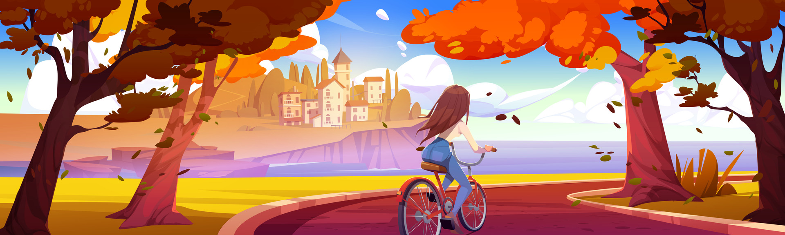

Wake and Surf, Pooley Bridge
Ullswater Paddleboarding, Watermillock
St Patrick's Boat Landing, Glenridding
There's a handy map of the area here. If you zoom in enough, you'll get the OS version.
For a truly local walk, head under the railway to admire Yanwath Hall, one of the best preserved peel towers in the north of England. Or take the public footbaths to Eamont Bridge or Sockbridge Mill.
There are a number of laminated paper guided walks in the property. We encourage you to take photographs of them on your phone rather than taking them out.
There are more ideas of local walks here.
You can hire bikes at Lowther Castle, and there are a number of waymarked routes around the grounds and beyond.
Here are some other ideas of places which are good for cycling.
Via Ferrata - scrambling and climbing across Honister Crag.
Go Ape high-rope course in Whinlatter Forest.
